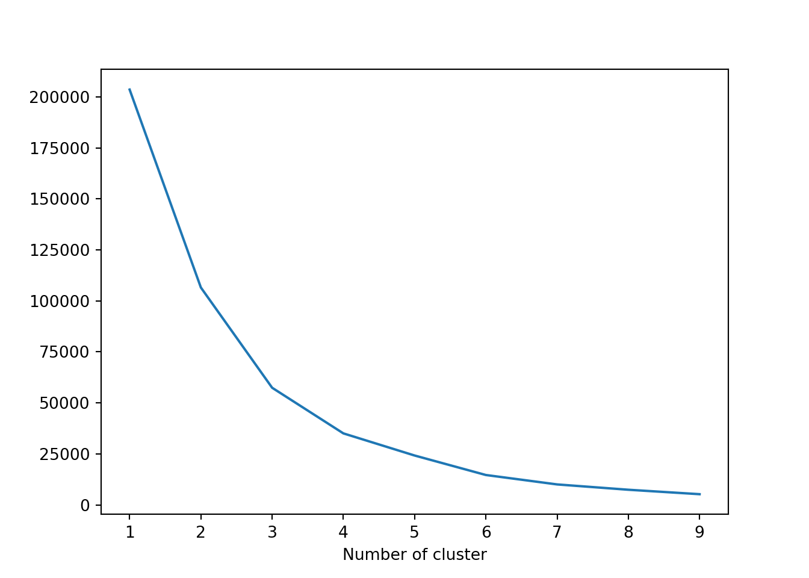

Chapter 4 Retail
4.1 E-Commerce Clothing Reviews
4.1.1 Background
Perkembangan teknologi membuat pergeseran perilaku customer dari pembelian offline menjadi pembelian online atau melalui e-commerce. Perbedaan utama saat berbelanja secara online atau offline adalah saat akan berbelanja secara online, calon customer tidak dapat memeriksa barang yang akan dibeli secara langsung dan biasanya dibantuk oleh gambar atau deskripsi yang diberikan oleh penjual. Tentunya customer akan mencari informasi mengenai produk yang akan dibeli untuk meminimalisir dampak negatif yang didapat. Untuk membantu customer dalam menentukan product yang akan dibeli, mayoritas e-commerce sekarang ini menyediakan fitur online customer review, dimana online customer review ini dijadikan sebagai salah satu media customer mendapatkan informasi tentang produk dari customer yang telah membeli produk tersebut. Meningkatnya e-commerce di Indonesia, kebutuhan analisa mengenai online customer review dirasa perlu dilakukan untuk mendukung agar customer dapat memiliki pengalaman belanja online yang lebih baik daripada belanja offline. Salah satu implementasi data review customer tersebut dapat dimanfaatkan untuk membuat model yang dapat memprediksi apakah product tersebut direkomendasikan atau tidak direkomendasikan. Harapannya setelah perusahaan dapat menilai product mana yang direkomendasikan dan yang tidak direkomendasikan, dapat membantu perusahaan dalam pertimbangan penentuan top seller. Untuk seller yang memiliki banyak product yang direkomendasikan, dapat dijadikan sebagai top seller.
reviews <- read.csv("assets/03-retail/Womens Clothing E-Commerce Reviews.csv")
head(reviews)#> X Clothing.ID Age Title
#> 1 0 767 33
#> 2 1 1080 34
#> 3 2 1077 60 Some major design flaws
#> 4 3 1049 50 My favorite buy!
#> 5 4 847 47 Flattering shirt
#> 6 5 1080 49 Not for the very petite
#> Review.Text
#> 1 Absolutely wonderful - silky and sexy and comfortable
#> 2 Love this dress! it's sooo pretty. i happened to find it in a store, and i'm glad i did bc i never would have ordered it online bc it's petite. i bought a petite and am 5'8". i love the length on me- hits just a little below the knee. would definitely be a true midi on someone who is truly petite.
#> 3 I had such high hopes for this dress and really wanted it to work for me. i initially ordered the petite small (my usual size) but i found this to be outrageously small. so small in fact that i could not zip it up! i reordered it in petite medium, which was just ok. overall, the top half was comfortable and fit nicely, but the bottom half had a very tight under layer and several somewhat cheap (net) over layers. imo, a major design flaw was the net over layer sewn directly into the zipper - it c
#> 4 I love, love, love this jumpsuit. it's fun, flirty, and fabulous! every time i wear it, i get nothing but great compliments!
#> 5 This shirt is very flattering to all due to the adjustable front tie. it is the perfect length to wear with leggings and it is sleeveless so it pairs well with any cardigan. love this shirt!!!
#> 6 I love tracy reese dresses, but this one is not for the very petite. i am just under 5 feet tall and usually wear a 0p in this brand. this dress was very pretty out of the package but its a lot of dress. the skirt is long and very full so it overwhelmed my small frame. not a stranger to alterations, shortening and narrowing the skirt would take away from the embellishment of the garment. i love the color and the idea of the style but it just did not work on me. i returned this dress.
#> Rating Recommended.IND Positive.Feedback.Count Division.Name Department.Name Class.Name
#> 1 4 1 0 Initmates Intimate Intimates
#> 2 5 1 4 General Dresses Dresses
#> 3 3 0 0 General Dresses Dresses
#> 4 5 1 0 General Petite Bottoms Pants
#> 5 5 1 6 General Tops Blouses
#> 6 2 0 4 General Dresses DressesData yang digunakan merupakan data women e-commerce clothing reviews. Terdapat dua variabel yang menjadi fokus analisis ini yaitu Review.Text dan Recommended.IND. Variabel Review.Text merupakan review yang diberikan oleh customer terhadap product dari berbagai e-commerce, sedangkan Recommended.IND merupakan penilaian rekomendasi dari customer, 1 artinya product tersebut recommended dan 0 artinya product tersebut not recommended.
Sebelum masuk cleaning data, kita ingin mengetahui proporsi dari target variabel:
prop.table(table(reviews$Recommended.IND))#>
#> 0 1
#> 0.1776377 0.82236234.1.2 Cleaning Data
Untuk mengolah data text, kita perlu mengubah data teks dari vector menjadi corpus dengan function Vcorpus().
reviews_corpus <- VCorpus(VectorSource(reviews$Review.Text))
reviews_corpus#> <<VCorpus>>
#> Metadata: corpus specific: 0, document level (indexed): 0
#> Content: documents: 23486Selanjutnya, kita melakukan text cleansing dengan beberapa langkah sebagai berikut:
tolowerdigunakan untuk mengubah semua karakter menjadi lowercase.removePunctuationdigunakan untuk menghilangkan semua tanda baca.removeNumbersdigunakan untuk menghilangkan semua angka.stopwordsdigunakan untuk menghilangkan kata-kata umum (am,and,or,if).stripWhitespacedigunakan untuk menghapus karakter spasi yang berlebihan.
data_clean <- reviews_corpus %>%
tm_map(content_transformer(tolower)) %>%
tm_map(removePunctuation) %>%
tm_map(removeNumbers) %>%
tm_map(removeWords, stopwords("en")) %>%
tm_map(content_transformer(stripWhitespace))
inspect(data_clean[[1]])#> <<PlainTextDocument>>
#> Metadata: 7
#> Content: chars: 43
#>
#> absolutely wonderful silky sexy comfortableSetelah melakukan text cleansing, text tersebut akan diubah menjadi Document Term Matrix(DTM) melalui proses tokenization. Tokenization berfungsi memecah 1 teks atau kalimat menjadi beberapa term. Terim bisa berupa 1 kata, 2 kata, dan seterusnya. Pada format DTM, 1 kata akan menjadi 1 feature, secara default nilainya adalah jumlah kata pada dokumen tersebut.
dtm_text <- DocumentTermMatrix(data_clean)Sebelum membentuk model, tentunya kita perlu split data menjadi data train dan data test dengan proporsi 80:20.
set.seed(100)
idx <- sample(nrow(dtm_text), nrow(dtm_text)*0.8)
train <- dtm_text[idx,]
test <- dtm_text[-idx,]
train_label <- reviews[idx,"Recommended.IND"]
test_label <- reviews[-idx,"Recommended.IND"]Term yang digunakan pada model ini, kita hanya mengambil term yang muncul paling sedikit 100 kali dari seluruh observasi dengan findFreqTerms().
freq <- findFreqTerms(dtm_text, 100)
train_r <- train[, freq]
test_r <- test[, freq]
inspect(train_r)#> <<DocumentTermMatrix (documents: 18788, terms: 870)>>
#> Non-/sparse entries: 389603/15955957
#> Sparsity : 98%
#> Maximal term length: 13
#> Weighting : term frequency (tf)
#> Sample :
#> Terms
#> Docs dress fabric fit great just like love size top wear
#> 12348 0 1 0 1 0 1 0 1 0 1
#> 12812 0 1 0 1 0 0 1 0 0 0
#> 15905 0 1 2 1 0 1 0 2 0 1
#> 1775 3 0 0 0 0 0 1 3 3 1
#> 18527 0 1 0 1 1 0 0 0 2 0
#> 19547 4 0 1 0 0 0 0 0 0 0
#> 21091 0 0 0 0 0 1 0 2 0 1
#> 22039 1 0 1 0 0 2 0 1 2 1
#> 4789 1 0 2 0 0 1 0 1 0 1
#> 6317 0 0 0 1 1 2 0 0 2 0Nilai dari setiap matrix masih berupa angka numerik, dengan range 0-inf. Naive bayes akan memiliki performa lebih bagus ketika variabel numerik diubah menjadi kategorik. Salah satu caranya dengan Bernoulli Converter, yaitu jika jumlah kata yang muncul lebih dari 1, maka kita akan anggap nilainya adalah 1, jika 0 artinya tidak ada kata tersebut.
bernoulli_conv <- function(x){
x <- as.factor(ifelse(x > 0, 1, 0))
return(x)
}
train.bern <- apply(train_r, MARGIN = 2, FUN = bernoulli_conv)
test.bern <- apply(test_r, MARGIN = 2, FUN = bernoulli_conv)4.1.3 Modelling
Selanjutnya, pembentukan model menggunakan naive bayes dan diikuti dengan prediksi data test.
model.nb <- naiveBayes(x = train.bern,
y = as.factor(train_label),
laplace = 1)
pred.nb <- predict(object = model.nb, newdata= test.bern)Dai hasil prediksi data test, kita akan menampilkan Confusion Matrix untuk mengetahui performa model.
confusionMatrix(data = as.factor(pred.nb),
reference = as.factor(test_label),
positive = "1")#> Confusion Matrix and Statistics
#>
#> Reference
#> Prediction 0 1
#> 0 647 428
#> 1 220 3403
#>
#> Accuracy : 0.8621
#> 95% CI : (0.8519, 0.8718)
#> No Information Rate : 0.8155
#> P-Value [Acc > NIR] : < 0.00000000000000022
#>
#> Kappa : 0.5806
#>
#> Mcnemar's Test P-Value : 0.0000000000000004232
#>
#> Sensitivity : 0.8883
#> Specificity : 0.7463
#> Pos Pred Value : 0.9393
#> Neg Pred Value : 0.6019
#> Prevalence : 0.8155
#> Detection Rate : 0.7244
#> Detection Prevalence : 0.7712
#> Balanced Accuracy : 0.8173
#>
#> 'Positive' Class : 1
#> 4.1.4 Visualize Data Text
Selanjutnya, kita akan coba lakukan prediksi terhadap data test dan juga menampilkan visualisasi text tersebut menggunakan package lime.
set.seed(100)
idx <- sample(nrow(reviews), nrow(reviews)*0.8)
train_lime <- reviews[idx,]
test_lime <- reviews[-idx,]tokenize_text <- function(text){
#create corpus
data_corpus <- VCorpus(VectorSource(text))
# cleansing
data_clean <- data_corpus %>%
tm_map(content_transformer(tolower)) %>%
tm_map(removePunctuation) %>%
tm_map(removeNumbers) %>%
tm_map(removeWords, stopwords("en")) %>%
tm_map(content_transformer(stripWhitespace))
#dtm
dtm_text <- DocumentTermMatrix(data_clean)
#convert to bernoulli
data_text <- apply(dtm_text, MARGIN = 2, FUN = bernoulli_conv)
return(data_text)
}model_type.naiveBayes <- function(x){
return("classification")
}
predict_model.naiveBayes <- function(x, newdata, type = "raw") {
# return classification probabilities only
res <- predict(x, newdata, type = "raw") %>% as.data.frame()
return(res)
}
text_train <- train_lime$Review.Text %>%
as.character()explainer <- lime(text_train,
model = model.nb,
preprocess = tokenize_text)text_test <- test_lime$Review.Text %>%
as.character()
set.seed(100)
explanation <- explain(text_test[5:10],
explainer = explainer,
n_labels =1,
n_features = 50,
single_explanation = F)plot_text_explanations(explanation)Dari hasil output observasi kedua terprediksi product tersebut recommended dengan probability 96.31% dan nilai explainer fit menunjukkan seberapa baik LIME dalam menginterpretasikan prediksi untuk observasi ini sebesar 0.89 artinya dapat dikatakan cukup akurat. Teks berlabel biru menunjukkan kata tersebut meningkatkan kemungkinan product tersebut untuk direkomendasikan, sedangkan teks berlabel merah berarti bahwa kata tersebut bertentangan/mengurangi kemungkinan product tersebut untuk direkomendasikan.
4.2 Customer Segmentation with RFM Analysis (in Python Programming Language)
4.2.1 Background
Dalam transaksi jual beli, customer memiliki peran penting dalam eksistensi dan kemajuan sebuah industri. Oleh karenanya berbagai strategi marketing dilakukan untuk menarik perhatian customer baru atau untuk mempertahankan loyalitas customer.
Cara yang paling umum dilakukan adalah pemberian diskon pada product tertentu atau pemberian free product untuk customer tertentu. Strategi marketing ini diterapkan sesuai dengan value yang dimiliki oleh customer. Beberapa value dapat dikategorikan menjadi low-value customer (customer dengan frekuensi transaksi rendah dan spend money rendah), medium-value customer (customer dengan frekuensi transaksi tinggi namun spend money rendah atau sebaliknya), dan high-value customer (customer dengan frekuensi transaksi tinggi dan spend money yang tinggi pula).
Dalam melakukan segmentasi customer ada beberapa faktor yang harus dipertimbangkan. Faktor tersebut umumnya dianalisis berdasarkan data historical transaksi yang dimiliki oleh customer. Dari data historical tersebut dilakukan analisis lebih lanjut untuk mengetahui pattern data dan kemudian dilakukan modelling dengan bantuan algoritma machine learning agar menghasilkan output yang dapat dipertanggungjawabkan. Rangkaian proses ini nantinya diharapkan dapat menjawab beberapa pertanyaan bisnis seperti :
Siapakah customer yang berpotensi untuk *churn*, Siapakah loyal customer, Siapakah potential customer, dan lain-lain.
Metode segmentasi yang paling umum digunakan untuk melakukan segmentasi customer adalah RFM analysis. RFM akan melakukan segmentasi berdasarkan 3 poin penting yaitu :
- Recency : Waktu transaksi terakhir yang dilakukan customer
- Frequency : Banyak transaksi yang dilakukan oleh customer
- Monetary : Banyak uang yang dikeluarkan ketika melakukan transaksi
Dalam artikel ini, akan dibahas lebih lanjut tentang proses segmentasi customer menggunakan metode RFM dengan bantuan machine learning clustering algorithm. Bahasa yang digunakan adalah bahasa pemrograman python.

4.2.2 Modelling Analysis
Pada artikel ini data yang digunakan adalah data online retail di UK yang dapat ditemukan pada link berikut. Data ini adalah data transaksi yang terjadi pada 01/12/2010 sampai 09/12/2011.
4.2.2.1 Import Library and Read Data
import pandas as pd
import seaborn as sns
import matplotlib.pyplot as pltecom = pd.read_csv("assets/03-retail/data_ecom_uk.csv",encoding='latin1')ecom.head(2)#> InvoiceNo StockCode ... CustomerID Country
#> 0 536365 85123A ... 17850.0 United Kingdom
#> 1 536365 71053 ... 17850.0 United Kingdom
#>
#> [2 rows x 8 columns]ecom.shape#> (541909, 8)Dataframe ini mengandung 541909 observasi dengan jumlah kolom sebanyak 8 yang antara lain adalah :
- InvoiceNo : Nomor invoice yang terdiri dari 6 digit angka unik. Ketika
InvoiceNodiawali dengan characterCmaka mengindikasikan cancellation transaction. - StockCode : Kode product yang terdiri dari 5 digit angka unik.
- Description : Deskripsi nama product.
- Quantity : Jumlah product yang dibeli pada setiap transaksi.
- InvoiceDate : Tanggal transaksi berlangsung.
- UnitPrice : Harga satuan product.
- CustomerID : ID Customer yang berisi 5 digit angka unik dan berbeda pada setiap customer.
- Country : Nama negara.
4.2.2.2 Get only transaction in UK
Dikarenakan terdapat beberapa data yang tidak berada pada country United Kingdom (UK), maka perlu dilakukan filter data hanya untuk country daerah UK.
ecom_uk = ecom[ecom['Country']=='United Kingdom']
ecom_uk.shape#> (495478, 8)ecom_uk.head(2)#> InvoiceNo StockCode ... CustomerID Country
#> 0 536365 85123A ... 17850.0 United Kingdom
#> 1 536365 71053 ... 17850.0 United Kingdom
#>
#> [2 rows x 8 columns]4.2.2.3 Handle Missing Values
Missing value adalah masalah yang umum dihadapi ketika melakukan proses pengolahan data. Missing value terjadi ketika terdapat obeservasi kosong pada sebuah data.
Pada hasil di bawah ini dapat diketahui informasi bahwa beberapa variable pada data menggandung nilai missing, variable tersebut antara lain adalah Description dan CustomerID. CustomerID adalah variable penting dalam RFM analisis, dikarenakan CustomerID mengandung informasi unik ID member. Sedangkan Description mengandung informasi terkait deskripsi produk. Jika ditelaah lebih jauh, untuk menangani missing values pada kedua variable tersebut dapat dilakukan dengan cara deletion, dikarenakan proses imputasi pada kedua variable tersebut akan menghasilkan informasi yang tidak akurat.
ecom_uk.isna().sum()#> InvoiceNo 0
#> StockCode 0
#> Description 1454
#> Quantity 0
#> InvoiceDate 0
#> UnitPrice 0
#> CustomerID 133600
#> Country 0
#> dtype: int64Berikut ini adalah proses penghapusan missing values pada data :
ecom_uk.dropna(inplace=True)#> <string>:1: SettingWithCopyWarning:
#> A value is trying to be set on a copy of a slice from a DataFrame
#>
#> See the caveats in the documentation: https://pandas.pydata.org/pandas-docs/stable/user_guide/indexing.html#returning-a-view-versus-a-copy4.2.2.4 Select Unique Transaction
Duplicated values atau duplikasi data adalah nilai berulang pada satu atau lebih observasi. Untuk menangani data yang duplikat dapat dilakukan penghapusan dan hanya mempertahankan salah satu observasi.
ecom_uk.drop_duplicates(subset=['InvoiceNo', 'CustomerID'], keep="first", inplace=True)4.2.2.5 Change Data Types
Dalam pengolahan data transformasi tipe data pada format yang sesuai sangat penting untuk dilakukan, hal ini agar nantinya data-data tersebut siap untuk dilakukan manipulasi lebih lanjut.
ecom_uk.dtypes#> InvoiceNo object
#> StockCode object
#> Description object
#> Quantity int64
#> InvoiceDate object
#> UnitPrice float64
#> CustomerID float64
#> Country object
#> dtype: objectecom_uk['InvoiceDate'] = pd.to_datetime(ecom_uk['InvoiceDate'])#> <string>:1: SettingWithCopyWarning:
#> A value is trying to be set on a copy of a slice from a DataFrame.
#> Try using .loc[row_indexer,col_indexer] = value instead
#>
#> See the caveats in the documentation: https://pandas.pydata.org/pandas-docs/stable/user_guide/indexing.html#returning-a-view-versus-a-copyecom_uk['Country'] = ecom_uk['Country'].astype('category')
ecom_uk['CustomerID'] = ecom_uk['CustomerID'].astype('int64')4.2.2.6 Drop cancelled transaction
Karakter pertama “C†pada InvoiceNo menunjukkan bahwa customer melakukan pembatalan terhadap transaksi yang dilakukan. Sehingga data akan kurang relevan jika tetap dipertahankan, maka dari itu perlu dilakukan penghapusan pada observasi tersebut.
ecom_uk = ecom_uk.loc[~ecom_uk.iloc[:,0].str.contains(r'C')]ecom_uk.head()#> InvoiceNo StockCode ... CustomerID Country
#> 0 536365 85123A ... 17850 United Kingdom
#> 7 536366 22633 ... 17850 United Kingdom
#> 9 536367 84879 ... 13047 United Kingdom
#> 21 536368 22960 ... 13047 United Kingdom
#> 25 536369 21756 ... 13047 United Kingdom
#>
#> [5 rows x 8 columns]4.2.3 Exploratory Data Analysis
Tahapan Exploratory Data Analysis digunakan untuk mengetahui pattern dari data.
4.2.3.1 Recency
Recency adalah faktor yang menyimpan informasi tentang berapa lama sejak customer melakukan pembelian. Untuk melakukan perhitungan recency pada masing-masing customer dapat dilakukan dengan cara memanipulasi tanggal transaksi customer dan kemudian dikurangi dengan tanggal maksimum yang terdapat pada data. Berikut di bawah ini adalah detail langkah-langkahnya :
- Manipulasi tanggal transaksi dengan mengekstrak informasi tanggal, bulan dan tahun transaksi.
ecom_uk['Date'] = ecom_uk['InvoiceDate'].dt.dateecom_uk.head(2)#> InvoiceNo StockCode ... Country Date
#> 0 536365 85123A ... United Kingdom 2010-12-01
#> 7 536366 22633 ... United Kingdom 2010-12-01
#>
#> [2 rows x 9 columns]- Mengambil tanggal transaksi maksimum pada keseluruhan observasi
last_trans = ecom_uk['Date'].max()
last_trans#> datetime.date(2011, 12, 9)- Mengekstrak informasi tanggal transaksi maksimum pada tiap customer.
recent = ecom_uk.groupby(by=['CustomerID'], as_index=False)['Date'].max()recent.columns = ['CustomerID','Last Transaction']
recent.head()#> CustomerID Last Transaction
#> 0 12346 2011-01-18
#> 1 12747 2011-12-07
#> 2 12748 2011-12-09
#> 3 12749 2011-12-06
#> 4 12820 2011-12-06- Menghitung selisih tanggal transaksi maksimum dengan tanggal transaksi terakhir pada tiap customer, kemudian menyimpan jumlah hari pada kolom
Days Recent.
recent['Days Recent'] = last_trans - recent['Last Transaction']
recent['Days Recent'] = recent['Days Recent'].dt.daysrecent.head()#> CustomerID Last Transaction Days Recent
#> 0 12346 2011-01-18 325
#> 1 12747 2011-12-07 2
#> 2 12748 2011-12-09 0
#> 3 12749 2011-12-06 3
#> 4 12820 2011-12-06 3recent.drop(columns=['Last Transaction'], inplace=True)4.2.3.2 Frequency
Frequency mengandung infromasi tentang seberapa sering customer melakukan transaksi pembelian dalam kurun waktu tertentu. Nilai frequency dapat diperoleh dengan cara menghitung jumlah transkasi pada setiap unik customer.
temp = ecom_uk[['CustomerID','InvoiceNo']]trans_cust = temp.groupby(by=['CustomerID']).count()
trans_cust.rename(columns={'InvoiceNo':'Number of Transaction'})#> Number of Transaction
#> CustomerID
#> 12346 1
#> 12747 11
#> 12748 210
#> 12749 5
#> 12820 4
#> ... ...
#> 18280 1
#> 18281 1
#> 18282 2
#> 18283 16
#> 18287 3
#>
#> [3921 rows x 1 columns]trans_cust.reset_index()#> CustomerID InvoiceNo
#> 0 12346 1
#> 1 12747 11
#> 2 12748 210
#> 3 12749 5
#> 4 12820 4
#> ... ... ...
#> 3916 18280 1
#> 3917 18281 1
#> 3918 18282 2
#> 3919 18283 16
#> 3920 18287 3
#>
#> [3921 rows x 2 columns]Ouptut di atas menunjukkan jumlah transaksi yang dilakukan pada masing-masing customer. CustomerID 12346 melakukan transaksi sebanyak 1 kali saja, CustomerID 12747 melakukan transaksi sebanyak 11 kali, dan seterusnya.
Berikut dibawah ini adalah detail informasi InvoiceNo pada setiap transaksi yang dilakukan oleh customer.
table_trans_details = temp.groupby(by=['CustomerID','InvoiceNo']).count()table_trans_details.head()#> Empty DataFrame
#> Columns: []
#> Index: [(12346, 541431), (12747, 537215), (12747, 538537), (12747, 541677), (12747, 545321)]4.2.3.3 Monetary
Monetary adalah faktor yang menyimpan jumlah pengeluaran customer dalam transaksi. Nilai monetary dapat dihitung dari harga barang yang dibeli oleh masing-masing customer pada transaksi tertentu dan kemudian dikalkulasikan dengan jumlah barang yang dibeli.
ecom_uk['Total'] = ecom_uk['UnitPrice'] * ecom_uk['Quantity']
ecom_uk.head(2)#> InvoiceNo StockCode ... Date Total
#> 0 536365 85123A ... 2010-12-01 15.3
#> 7 536366 22633 ... 2010-12-01 11.1
#>
#> [2 rows x 10 columns]monetary = ecom_uk.groupby(by=['CustomerID'], as_index=False)['Total'].sum()monetary#> CustomerID Total
#> 0 12346 77183.60
#> 1 12747 689.49
#> 2 12748 3841.31
#> 3 12749 98.35
#> 4 12820 58.20
#> ... ... ...
#> 3916 18280 23.70
#> 3917 18281 5.04
#> 3918 18282 38.25
#> 3919 18283 66.75
#> 3920 18287 80.40
#>
#> [3921 rows x 2 columns]4.2.3.4 Merge Column based on CustomerID
Setelah mendapatkan informasi pada setiap faktor penting, langkah selanjutnya adalah menyimpannya kedalam sebuah dataframe baru.
new_ = monetary.merge(trans_cust,on='CustomerID')
new_data = new_.merge(recent,on='CustomerID')
new_data.rename(columns={'Total':'Monetary','InvoiceNo':'Frequency','Days Recent':'Recency'}, inplace=True)
new_data.head()#> CustomerID Monetary Frequency Recency
#> 0 12346 77183.60 1 325
#> 1 12747 689.49 11 2
#> 2 12748 3841.31 210 0
#> 3 12749 98.35 5 3
#> 4 12820 58.20 4 34.2.4 Modelling
4.2.4.1 Clustering Recency, Frequency, and Monetary
Proses clustering bertujuan untuk membagi level customer kedalam beberapa segment tertentu meliputi low-value customer, medium-value customer or high-value customer.
4.2.4.2 Recency
Pada faktor Recency, customer yang memiliki recent trasaksi akan di kategorikan pada high-value customer. Kenapa? Karena customer tersebut berpotensi untuk melakukan pembelian lagi dibanding dengan customer yang sudah lama tidak melakukan pembelian.
new_data['Recency'].describe()#> count 3921.000000
#> mean 91.722265
#> std 99.528532
#> min 0.000000
#> 25% 17.000000
#> 50% 50.000000
#> 75% 142.000000
#> max 373.000000
#> Name: Recency, dtype: float64Teknik elbow mwthod untuk menentukan jumlah cluster yang terbentuk.
from sklearn.cluster import KMeans
sse={}
recency = new_data[['Recency']]
for k in range(1, 10):
kmeans = KMeans(n_clusters=k, max_iter=1000).fit(recency)
recency["clusters"] = kmeans.labels_
sse[k] = kmeans.inertia_ #> <string>:3: SettingWithCopyWarning:
#> A value is trying to be set on a copy of a slice from a DataFrame.
#> Try using .loc[row_indexer,col_indexer] = value instead
#>
#> See the caveats in the documentation: https://pandas.pydata.org/pandas-docs/stable/user_guide/indexing.html#returning-a-view-versus-a-copy
#> <string>:3: SettingWithCopyWarning:
#> A value is trying to be set on a copy of a slice from a DataFrame.
#> Try using .loc[row_indexer,col_indexer] = value instead
#>
#> See the caveats in the documentation: https://pandas.pydata.org/pandas-docs/stable/user_guide/indexing.html#returning-a-view-versus-a-copy
#> <string>:3: SettingWithCopyWarning:
#> A value is trying to be set on a copy of a slice from a DataFrame.
#> Try using .loc[row_indexer,col_indexer] = value instead
#>
#> See the caveats in the documentation: https://pandas.pydata.org/pandas-docs/stable/user_guide/indexing.html#returning-a-view-versus-a-copy
#> <string>:3: SettingWithCopyWarning:
#> A value is trying to be set on a copy of a slice from a DataFrame.
#> Try using .loc[row_indexer,col_indexer] = value instead
#>
#> See the caveats in the documentation: https://pandas.pydata.org/pandas-docs/stable/user_guide/indexing.html#returning-a-view-versus-a-copy
#> <string>:3: SettingWithCopyWarning:
#> A value is trying to be set on a copy of a slice from a DataFrame.
#> Try using .loc[row_indexer,col_indexer] = value instead
#>
#> See the caveats in the documentation: https://pandas.pydata.org/pandas-docs/stable/user_guide/indexing.html#returning-a-view-versus-a-copy
#> <string>:3: SettingWithCopyWarning:
#> A value is trying to be set on a copy of a slice from a DataFrame.
#> Try using .loc[row_indexer,col_indexer] = value instead
#>
#> See the caveats in the documentation: https://pandas.pydata.org/pandas-docs/stable/user_guide/indexing.html#returning-a-view-versus-a-copy
#> <string>:3: SettingWithCopyWarning:
#> A value is trying to be set on a copy of a slice from a DataFrame.
#> Try using .loc[row_indexer,col_indexer] = value instead
#>
#> See the caveats in the documentation: https://pandas.pydata.org/pandas-docs/stable/user_guide/indexing.html#returning-a-view-versus-a-copy
#> <string>:3: SettingWithCopyWarning:
#> A value is trying to be set on a copy of a slice from a DataFrame.
#> Try using .loc[row_indexer,col_indexer] = value instead
#>
#> See the caveats in the documentation: https://pandas.pydata.org/pandas-docs/stable/user_guide/indexing.html#returning-a-view-versus-a-copy
#> <string>:3: SettingWithCopyWarning:
#> A value is trying to be set on a copy of a slice from a DataFrame.
#> Try using .loc[row_indexer,col_indexer] = value instead
#>
#> See the caveats in the documentation: https://pandas.pydata.org/pandas-docs/stable/user_guide/indexing.html#returning-a-view-versus-a-copyplt.figure()#> <Figure size 700x500 with 0 Axes>plt.plot(list(sse.keys()), list(sse.values()))#> [<matplotlib.lines.Line2D object at 0x000001F2B25781C0>]plt.xlabel("Number of cluster")#> Text(0.5, 0, 'Number of cluster')plt.show()kmeans = KMeans(n_clusters=3)
kmeans.fit(new_data[['Recency']])#> KMeans(n_clusters=3)new_data['RecencyCluster'] = kmeans.predict(new_data[['Recency']])new_data.groupby('RecencyCluster')['Recency'].describe()#> count mean std ... 50% 75% max
#> RecencyCluster ...
#> 0 723.0 154.673582 37.878377 ... 155.0 186.00 222.0
#> 1 558.0 293.175627 45.309128 ... 283.5 325.75 373.0
#> 2 2640.0 31.902273 25.336528 ... 25.0 51.00 93.0
#>
#> [3 rows x 8 columns]Berdasarkan visualisasi grafik elbow, maka jumlah cluster ideal yang dapat dibentuk adalah sebanyak 3 cluster. Pada hasil di atas menunjukkan bahwa cluster 1 mengandung informasi customer yang melakukan transaksi paling baru (most recent) sedangkan cluster 0 mengandung informasi customer yang sudah lama tidak melakukan transaksi pembelian.
Untuk keperluan standarisasi, maka perlu dilakukan re-order cluster sehingga cluster 0 akan memuat informasi low-value customer, cluster 1 medium-value customer dan cluster 2 high-value customer.
Dikarenakan step ini adalah step Recency, maka cluster yang memiliki nilai recency rendah akan dikategorikan pada cluster 2.
Dibawah ini adalah fungsi untuk melakukan reorder cluster :
#function for ordering cluster numbers
def order_cluster(cluster_field_name, target_field_name,df,ascending):
new_cluster_field_name = 'new_' + cluster_field_name
df_new = df.groupby(cluster_field_name)[target_field_name].mean().reset_index()
df_new = df_new.sort_values(by=target_field_name,ascending=ascending).reset_index(drop=True)
df_new['index'] = df_new.index
df_final = pd.merge(df,df_new[[cluster_field_name,'index']], on=cluster_field_name)
df_final = df_final.drop([cluster_field_name],axis=1)
df_final = df_final.rename(columns={"index":cluster_field_name})
return df_finalnew_data = order_cluster('RecencyCluster', 'Recency',new_data,False)4.2.4.3 Frequency
Factor penting selanjutnya adalah Frequency. Pada step frequency, customer yang memiliki banyak transaksi pembelian akan dikategorikan pada level high-value customer.
new_data['Frequency'].describe()#> count 3921.000000
#> mean 4.246111
#> std 7.205750
#> min 1.000000
#> 25% 1.000000
#> 50% 2.000000
#> 75% 5.000000
#> max 210.000000
#> Name: Frequency, dtype: float64sse={}
frequency = new_data[['Frequency']]
for k in range(1, 10):
kmeans = KMeans(n_clusters=k, max_iter=1000).fit(frequency)
frequency["clusters"] = kmeans.labels_
sse[k] = kmeans.inertia_ #> <string>:3: SettingWithCopyWarning:
#> A value is trying to be set on a copy of a slice from a DataFrame.
#> Try using .loc[row_indexer,col_indexer] = value instead
#>
#> See the caveats in the documentation: https://pandas.pydata.org/pandas-docs/stable/user_guide/indexing.html#returning-a-view-versus-a-copy
#> <string>:3: SettingWithCopyWarning:
#> A value is trying to be set on a copy of a slice from a DataFrame.
#> Try using .loc[row_indexer,col_indexer] = value instead
#>
#> See the caveats in the documentation: https://pandas.pydata.org/pandas-docs/stable/user_guide/indexing.html#returning-a-view-versus-a-copy
#> <string>:3: SettingWithCopyWarning:
#> A value is trying to be set on a copy of a slice from a DataFrame.
#> Try using .loc[row_indexer,col_indexer] = value instead
#>
#> See the caveats in the documentation: https://pandas.pydata.org/pandas-docs/stable/user_guide/indexing.html#returning-a-view-versus-a-copy
#> <string>:3: SettingWithCopyWarning:
#> A value is trying to be set on a copy of a slice from a DataFrame.
#> Try using .loc[row_indexer,col_indexer] = value instead
#>
#> See the caveats in the documentation: https://pandas.pydata.org/pandas-docs/stable/user_guide/indexing.html#returning-a-view-versus-a-copy
#> <string>:3: SettingWithCopyWarning:
#> A value is trying to be set on a copy of a slice from a DataFrame.
#> Try using .loc[row_indexer,col_indexer] = value instead
#>
#> See the caveats in the documentation: https://pandas.pydata.org/pandas-docs/stable/user_guide/indexing.html#returning-a-view-versus-a-copy
#> <string>:3: SettingWithCopyWarning:
#> A value is trying to be set on a copy of a slice from a DataFrame.
#> Try using .loc[row_indexer,col_indexer] = value instead
#>
#> See the caveats in the documentation: https://pandas.pydata.org/pandas-docs/stable/user_guide/indexing.html#returning-a-view-versus-a-copy
#> <string>:3: SettingWithCopyWarning:
#> A value is trying to be set on a copy of a slice from a DataFrame.
#> Try using .loc[row_indexer,col_indexer] = value instead
#>
#> See the caveats in the documentation: https://pandas.pydata.org/pandas-docs/stable/user_guide/indexing.html#returning-a-view-versus-a-copy
#> <string>:3: SettingWithCopyWarning:
#> A value is trying to be set on a copy of a slice from a DataFrame.
#> Try using .loc[row_indexer,col_indexer] = value instead
#>
#> See the caveats in the documentation: https://pandas.pydata.org/pandas-docs/stable/user_guide/indexing.html#returning-a-view-versus-a-copy
#> <string>:3: SettingWithCopyWarning:
#> A value is trying to be set on a copy of a slice from a DataFrame.
#> Try using .loc[row_indexer,col_indexer] = value instead
#>
#> See the caveats in the documentation: https://pandas.pydata.org/pandas-docs/stable/user_guide/indexing.html#returning-a-view-versus-a-copyplt.figure()#> <Figure size 700x500 with 0 Axes>plt.plot(list(sse.keys()), list(sse.values()))#> [<matplotlib.lines.Line2D object at 0x000001F2B26179D0>]plt.xlabel("Number of cluster")#> Text(0.5, 0, 'Number of cluster')plt.show()
kmeans = KMeans(n_clusters=3)
kmeans.fit(new_data[['Frequency']])#> KMeans(n_clusters=3)new_data['FrequencyCluster'] = kmeans.predict(new_data[['Frequency']])
new_data.groupby('FrequencyCluster')['Frequency'].describe()#> count mean std ... 50% 75% max
#> FrequencyCluster ...
#> 0 3729.0 3.130598 2.672453 ... 2.0 4.00 13.0
#> 1 186.0 22.978495 10.302955 ... 19.0 26.00 63.0
#> 2 6.0 116.833333 47.562240 ... 95.0 117.25 210.0
#>
#> [3 rows x 8 columns]Sama halnya dengan tahapan pada step Recency, pada step ini juga perlu dilakukan standarisasi cluster dengan melakukan reorder pada cluster. Sehingga cluster 0 dengan nilai frequency yang rendah akan dikategorikan pada level low-value customer sedangkan cluster 2 dengan nilai frequency tinggi akan dikategorikan pada level high-values customer.
new_data = order_cluster('FrequencyCluster', 'Frequency',new_data,True)4.2.4.4 Monetary
Faktor penting terakhir pada RFM analysis adalah Monetary. Customer dengan nilai monetary yang tinggi akan dikategorikan pada level high-value customer dikarenakan berkontribusi besar dalam pendapatan yang dihasilkan industry.
new_data['Monetary'].describe()#> count 3921.000000
#> mean 293.299913
#> std 3261.756525
#> min 0.000000
#> 25% 17.700000
#> 50% 45.400000
#> 75% 124.500000
#> max 168471.250000
#> Name: Monetary, dtype: float64sse={}
monetary_ = new_data[['Monetary']]
for k in range(1, 10):
kmeans = KMeans(n_clusters=k, max_iter=1000).fit(monetary_)
monetary_["clusters"] = kmeans.labels_
sse[k] = kmeans.inertia_ #> <string>:3: SettingWithCopyWarning:
#> A value is trying to be set on a copy of a slice from a DataFrame.
#> Try using .loc[row_indexer,col_indexer] = value instead
#>
#> See the caveats in the documentation: https://pandas.pydata.org/pandas-docs/stable/user_guide/indexing.html#returning-a-view-versus-a-copy
#> <string>:3: SettingWithCopyWarning:
#> A value is trying to be set on a copy of a slice from a DataFrame.
#> Try using .loc[row_indexer,col_indexer] = value instead
#>
#> See the caveats in the documentation: https://pandas.pydata.org/pandas-docs/stable/user_guide/indexing.html#returning-a-view-versus-a-copy
#> <string>:3: SettingWithCopyWarning:
#> A value is trying to be set on a copy of a slice from a DataFrame.
#> Try using .loc[row_indexer,col_indexer] = value instead
#>
#> See the caveats in the documentation: https://pandas.pydata.org/pandas-docs/stable/user_guide/indexing.html#returning-a-view-versus-a-copy
#> <string>:3: SettingWithCopyWarning:
#> A value is trying to be set on a copy of a slice from a DataFrame.
#> Try using .loc[row_indexer,col_indexer] = value instead
#>
#> See the caveats in the documentation: https://pandas.pydata.org/pandas-docs/stable/user_guide/indexing.html#returning-a-view-versus-a-copy
#> <string>:3: SettingWithCopyWarning:
#> A value is trying to be set on a copy of a slice from a DataFrame.
#> Try using .loc[row_indexer,col_indexer] = value instead
#>
#> See the caveats in the documentation: https://pandas.pydata.org/pandas-docs/stable/user_guide/indexing.html#returning-a-view-versus-a-copy
#> <string>:3: SettingWithCopyWarning:
#> A value is trying to be set on a copy of a slice from a DataFrame.
#> Try using .loc[row_indexer,col_indexer] = value instead
#>
#> See the caveats in the documentation: https://pandas.pydata.org/pandas-docs/stable/user_guide/indexing.html#returning-a-view-versus-a-copy
#> <string>:3: SettingWithCopyWarning:
#> A value is trying to be set on a copy of a slice from a DataFrame.
#> Try using .loc[row_indexer,col_indexer] = value instead
#>
#> See the caveats in the documentation: https://pandas.pydata.org/pandas-docs/stable/user_guide/indexing.html#returning-a-view-versus-a-copy
#> <string>:3: SettingWithCopyWarning:
#> A value is trying to be set on a copy of a slice from a DataFrame.
#> Try using .loc[row_indexer,col_indexer] = value instead
#>
#> See the caveats in the documentation: https://pandas.pydata.org/pandas-docs/stable/user_guide/indexing.html#returning-a-view-versus-a-copy
#> <string>:3: SettingWithCopyWarning:
#> A value is trying to be set on a copy of a slice from a DataFrame.
#> Try using .loc[row_indexer,col_indexer] = value instead
#>
#> See the caveats in the documentation: https://pandas.pydata.org/pandas-docs/stable/user_guide/indexing.html#returning-a-view-versus-a-copyplt.figure()#> <Figure size 700x500 with 0 Axes>plt.plot(list(sse.keys()), list(sse.values()))#> [<matplotlib.lines.Line2D object at 0x000001F2B25EAD30>]plt.xlabel("Number of cluster")#> Text(0.5, 0, 'Number of cluster')plt.show()kmeans = KMeans(n_clusters=3)
kmeans.fit(new_data[['Monetary']])#> KMeans(n_clusters=3)new_data['MonetaryCluster'] = kmeans.predict(new_data[['Monetary']])
new_data.groupby('MonetaryCluster')['Monetary'].describe()#> count mean ... 75% max
#> MonetaryCluster ...
#> 0 6.0 40051.213333 ... 41519.325 77183.60
#> 1 1.0 168471.250000 ... 168471.250 168471.25
#> 2 3914.0 189.384371 ... 123.200 17895.28
#>
#> [3 rows x 8 columns]Reorder cluster untuk standarisasi cluster sehingga cluster 0 dengan nilai monetary rendah akan dikategorikan dalam low-value customer sedangkan cluster 2 dengan nilai monetary tinggi akan dikelompokkan pada high-values customer.
new_data = order_cluster('MonetaryCluster', 'Monetary',new_data,True)4.2.4.5 Segmentation Customer based on Cluster
Setelah memperoleh nilai cluster terurut pada setiap observasi data, langkah selanjutnya adalah memberikan label pada masing-masing observasi. Label ini bertujuan untuk mengidentifikasi level pada masing-masing customer apakah tergolong pada low-value customer, medium-value customer atau high-value customer.
Proses pelabelan terdiri dari beberapa tahapan yang antara lain adalah :
new_data.head()#> CustomerID Monetary ... FrequencyCluster MonetaryCluster
#> 0 12346 77183.60 ... 0 1
#> 1 15098 39916.50 ... 0 1
#> 2 16029 24384.92 ... 1 1
#> 3 17450 26768.97 ... 1 1
#> 4 17949 29999.69 ... 1 1
#>
#> [5 rows x 7 columns]- Menghitung score pada masing-masing observasi dengan melakukan penjumlahan pada nilai cluster.
new_data['Score'] = new_data['RecencyCluster'] + new_data['FrequencyCluster'] + new_data['MonetaryCluster']
new_data.head(2)#> CustomerID Monetary Frequency ... FrequencyCluster MonetaryCluster Score
#> 0 12346 77183.6 1 ... 0 1 1
#> 1 15098 39916.5 3 ... 0 1 2
#>
#> [2 rows x 8 columns]print(new_data['Score'].min())#> 0print(new_data['Score'].max())#> 4Dari hasil di atas diperoleh informasi bahwa minimum score pada data adalah 0, sedangkan maksimum value pada data adalah 4. Sehingga untuk segmentasi label dapat dikategorikan berdasarkan ketentuan berikut :
- Customer dengan score <= 1 akan masuk dalam kategori
low-value customer - Customer dengan score <= 3 akan masuk dalam kategori
medium-value customer - Customer dengan score > 3 akan masuk dalam kategori
high-value customer
label = []
def label_(data) :
if data <= 1 :
lab = "Low"
elif data <= 3 :
lab = "Medium"
else :
lab = "High"
label.append(lab)new_data['Score'].apply(label_)#> 0 None
#> 1 None
#> 2 None
#> 3 None
#> 4 None
#> ...
#> 3916 None
#> 3917 None
#> 3918 None
#> 3919 None
#> 3920 None
#> Name: Score, Length: 3921, dtype: objectnew_data['Label'] = labelnew_data.head(2)#> CustomerID Monetary Frequency ... MonetaryCluster Score Label
#> 0 12346 77183.6 1 ... 1 1 Low
#> 1 15098 39916.5 3 ... 1 2 Medium
#>
#> [2 rows x 9 columns]4.2.5 Customer’s behavior in each factor based on their label
Setelah memberikan label pada masing-masing customer, apakah sudah cukup membantu untuk tim management dalam menentukan strategi marketing yang tepat? Jawabannya dapat Ya atau Tidak. Tidak dikarenakan management perlu untuk mengetahui informasi detail dari behavior (kebiasaan) customer pada setiap level dalam melakukan pembelanjaan. Oleh karena itu, sebelum melangkah lebih jauh, terlebih dahulu lakukan behavior analisis sebagai berikut :
import numpy as np
def neg_to_zero(x):
if x <= 0:
return 1
else:
return x
new_data['Recency'] = [neg_to_zero(x) for x in new_data.Recency]
new_data['Monetary'] = [neg_to_zero(x) for x in new_data.Monetary]
rfm_log = new_data[['Recency', 'Frequency', 'Monetary']].apply(np.log, axis = 1).round(3)from sklearn.preprocessing import StandardScaler
scaler = StandardScaler()
rfm_scaled = scaler.fit_transform(rfm_log)
rfm_scaled = pd.DataFrame(rfm_scaled, index = new_data.index, columns = rfm_log.columns)rfm_scaled.head()#> Recency Frequency Monetary
#> 0 1.389971 -1.049966 4.788147
#> 1 0.996792 0.170733 4.359157
#> 2 -0.064790 3.551812 4.038228
#> 3 -1.121628 3.203041 4.098768
#> 4 -2.530970 3.178605 4.172979rfm_scaled['Label'] = new_data.Label
rfm_scaled['CustomerID'] = new_data.CustomerIDrfm_scaled#> Recency Frequency Monetary Label CustomerID
#> 0 1.389971 -1.049966 4.788147 Low 12346
#> 1 0.996792 0.170733 4.359157 Medium 15098
#> 2 -0.064790 3.551812 4.038228 High 16029
#> 3 -1.121628 3.203041 4.098768 High 17450
#> 4 -2.530970 3.178605 4.172979 High 17949
#> ... ... ... ... ... ...
#> 3916 -2.061189 4.031650 3.055261 High 13089
#> 3917 -2.530970 3.984999 1.973998 High 14606
#> 3918 -2.530970 3.960563 2.967380 High 15311
#> 3919 -2.530970 4.303780 2.165383 High 17841
#> 3920 -2.530970 -0.280226 5.296556 High 16446
#>
#> [3921 rows x 5 columns]rfm_melted = pd.melt(frame= rfm_scaled, id_vars= ['CustomerID', 'Label'], \
var_name = 'Metrics', value_name = 'Value')rfm_melted#> CustomerID Label Metrics Value
#> 0 12346 Low Recency 1.389971
#> 1 15098 Medium Recency 0.996792
#> 2 16029 High Recency -0.064790
#> 3 17450 High Recency -1.121628
#> 4 17949 High Recency -2.530970
#> ... ... ... ... ...
#> 11758 13089 High Monetary 3.055261
#> 11759 14606 High Monetary 1.973998
#> 11760 15311 High Monetary 2.967380
#> 11761 17841 High Monetary 2.165383
#> 11762 16446 High Monetary 5.296556
#>
#> [11763 rows x 4 columns]Visualisasi behavior customer pada setiap level.
import seaborn as sns
# a snake plot with RFM
sns.lineplot(x = 'Metrics', y = 'Value', hue = 'Label', data = rfm_melted)#> <AxesSubplot:xlabel='Metrics', ylabel='Value'>plt.title('Customer Behavior based on their Label')#> Text(0.5, 1.0, 'Customer Behavior based on their Label')plt.legend(loc = 'upper right')#> <matplotlib.legend.Legend object at 0x000001F2B2802670>Berdasarkan visualisasi di atas diperoleh detail informasi bahwa :
- Customer dengan
high-valuelabels memiliki kecenderungan untuk menghabiskan banyak uang dalam berbelanja (high monetary) dan sering melakukan pembelanjaan (high frequency) - Customer dengan
medium-valuelabels tidak terlalu sering melakukan pembelian dan juga tidak banyak menghabiskan uang selama transaksi. - Customer dengan
low-valuelabels hanya menghabiskan sedikit uang selama berbelanja, tidak terlalu sering berbelanja, tetapi memiliki nilai recency yang cukup tinggi dibandingkan level lainnya.
Berdasarkan rules di atas, pihak management dapat mempertimbangkan melakukan strategi marketing dengan cara :
- Memberikan special promotion atau discount untuk
low-valuecustomer yang baru-baru saja berkunjung untuk berbelanja, sehingga mereka tertarik untuk berbelanja lagi di lain waktu. - Mempertahankan
medium-valuecustomer dengan cara memberikan cashback pada pembeliannya. - Memberikan reward pada loyal customer (
high-value) dengan cara memberikan free product atau cashback pada pembelanjaannya.
4.2.6 Conclusion
RFM analysis adalah teknik yang umum digunakan untuk melakukan segmentasi terhadap customer berdasarkan value dan behavior selama bertransaksi. Teknik ini sangat membantu pihak management khususnya marketing team dalam menentukan strategi bisnis yang cocok untuk mempertahankan loyal customer dan menarik customer baru.